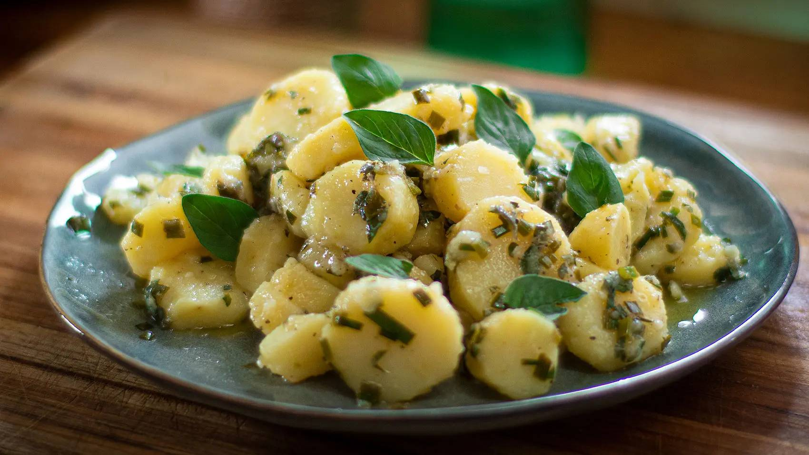

Italian Potato Salad

Description
One of the easiest and healthiest potato salad you will find. This one has no mayo or cream bases, it simply has the Mediterranean flavour of garlic and olive oil enhanced with fresh herbs and lemon. Couldn’t be simpler. The secret is using the kipfler potatoes, there’s simply no better potato for potato salad. if you can’t find kipfler, then use a waxy variety. You can use dried oregano but the chives need to be fresh. If you can’t find chives, then use spring (green) onion.
Ingredients
- 2lb - 900g Kipfler potatoes
- 2 garlic cloves
- ⅔ cup extra virgin olive oil
- 2 lemons, juiced
- Fresh or dried oregano
- Fresh chives (or spring onion)
- Salt and pepper to taste
Instructions
-
Peel potatoes, place in water once peeled and give them a good rinse. Add potatoes to a large pot of cold salted water and cook until tender, about 25 minutes from cold. Refresh, drain and slice into medium thick round disc shapes.
-
In a large bowl, mix the finely pureed garlic, olive oil, lemon juice, finely chopped oregano, and chives. Season with salt and pepper. Mix well. Add potatoes and toss to evenly coat. Cover and refrigerate overnight or at least 2 hours. Garnish with fresh oregano leaves.